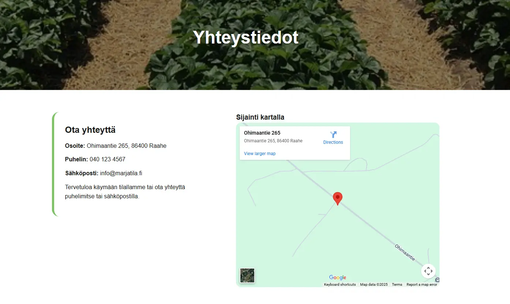
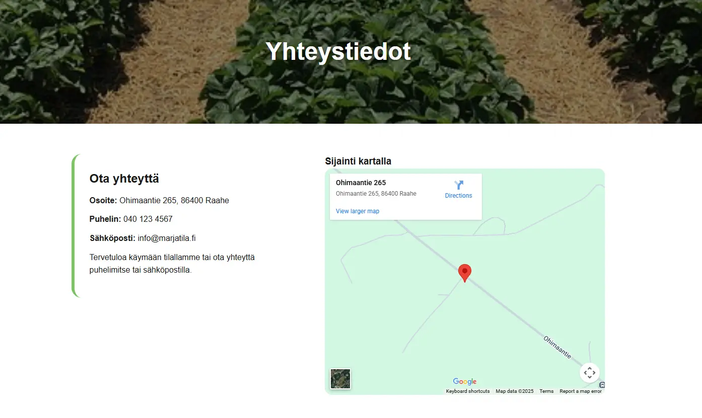

Ohimaan Marjatila -sivusto
Kuvaus
Loin marjatilalle raikkaan ja kotimaisuutta korostavan verkkosivuston, jossa tuotteet esitellään selkeästi ja houkuttelevasti. Etusivu tuo marjat visuaalisesti esiin, tilauslomake mahdollistaa helpon tilaamisen ja yhteystiedot-sivu sisältää hinnastot, aukioloajat sekä karttanäkymän tilan sijainnista. Sivusto on responsiivinen, käyttäjäystävällinen, visuaalisesti yhtenäinen ja saavutettavuus on huomioitu erityisesti kontrastien ja selkeiden elementtien osalta.
Keskeiset ominaisuudet
- Tuotekortit hover-animaatioilla
- Google Maps -integraatio
- Yritysilmeen mukainen visuaalinen rakenne
- Responsiivinen ja selkeä käyttäjäkokemus
- Saavutettavuus huomioitu kontrastien ja selkeän rakenteen avulla
Opitut asiat
Opin suunnittelemaan tuotekeskeisiä ja selkeitä verkkosivuja, joissa tuotteet ja visuaalinen ilme tukevat toisiaan. Harjoituksen aikana vahvistui osaaminen värien, typografian ja rakenteen käytössä brändin tunnistettavuuden luomisessa sekä responsiivisten käyttöliittymien toteuttamisessa.
Teknologiat
HTML, CSS, JavaScript
 
